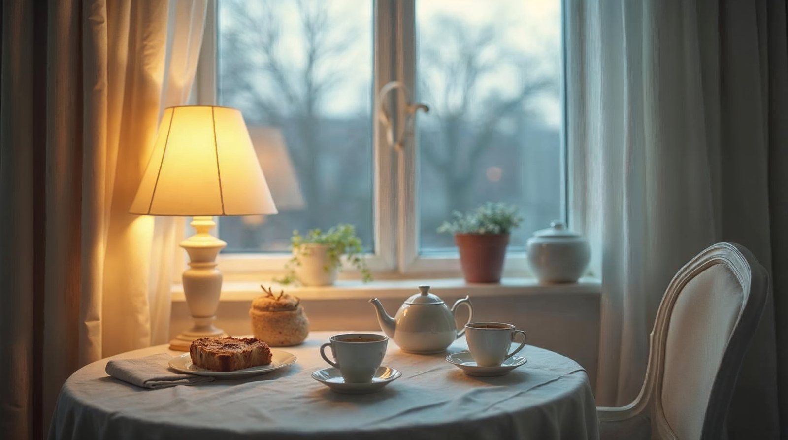
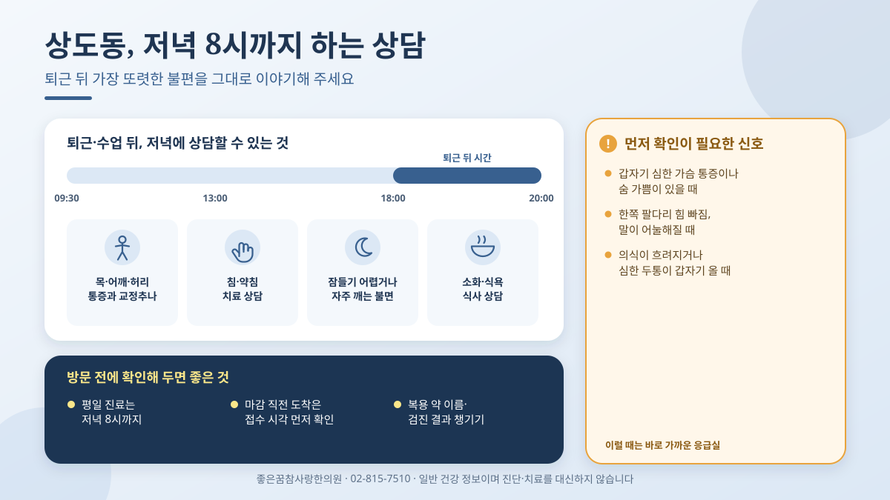

이종호 한의사 감수좋은꿈참사랑한의원 대표원장 (한의사 면허번호 19769)발행 2026-11-23 · 수정 2026-11-26
이 글의 차례
퇴근 뒤에 들러도 통증, 잠, 소화, 한약 상담과 교정추나, 침, 필요할 때의 초음파 진찰까지 이어서 받으실 수 있습니다. 서울 동작구 상도동의 좋은꿈참사랑한의원은 평일 오전 9시 30분부터 저녁 8시까지 진료합니다(점심시간 13시~14시).
다만 처음 오시는 날이나 한약 상담처럼 이야기가 길어지는 진료는 마감에 쫓기지 않게 여유를 두고 오시길 권합니다. 그날 마지막 접수 시각과 진료하는 원장은 방문 전 전화(02-815-7510)로 확인해 주세요.
퇴근길 저녁 7시 반, 상도역 3번 출구로 나오는데 뒷목이 뻣뻣하게 당깁니다. 점심에 급히 먹은 것이 아직 얹힌 것 같고, 오늘 밤도 잠이 얕을 것 같습니다. 한의원이 떠오르지만 지금 가서 이 얘기를 다 할 수 있을까 싶어 그냥 집으로 향하게 되지요.
진료실에서 이런 말씀을 자주 듣습니다. 낮에는 도저히 시간이 나지 않아 몇 주를 미뤘다고요. 그동안 하루가 끝날 때마다 그 불편을 안고 집에 가셨을 걸 생각하면, 얼마나 애쓰셨을까 싶습니다.
왜 저녁 시간에 찾는 분이 많을까요
상도동과 노량진 일대에는 낮에 일하는 직장인과 학원가를 오가는 수험생이 많습니다. 퇴근이나 수업이 끝난 뒤에야 겨우 시간이 나지요. 가게를 지키느라 평일 낮을 비우기 어려운 분들도 계십니다.
하루 종일 앉아 있거나 서서 일한 뒤에는 목·어깨·허리의 불편이 가장 또렷하게 느껴집니다. 그때 오시면 어느 동작에서 어떻게 불편한지 이야기가 구체적입니다.
저녁은 하루 리듬을 돌아보기에도 좋은 때입니다. 저는 잘 먹고, 잘 싸고, 잘 자고, 마음 편하고, 몸 따뜻하게, 이 다섯 가지를 몸이 회복하는 바탕으로 봅니다. 저녁에 오시면 오늘 하루치로 이 다섯 가지를 하나씩 짚어 볼 수 있습니다.
진맥 이야기를 조금 보태면, 『내경』은 하루 중 몸이 가장 고요한 이른 아침을 진맥하기 가장 좋은 때로 보았습니다. 저녁에 오시면 하루를 지나온 몸을 짚게 되지요. 맥은 그날의 피로와 긴장에 따라 달라질 수 있어서, 아침에는 몸이 어떤지 한 줄 적어 오시면 저녁에 짚은 맥과 함께 맞춰 보기 좋습니다.
사람마다 맥에 좋고 나쁨이 있는 게 아니라, 얼굴 생김새처럼 다 다를 뿐입니다. 그래서 저녁에 짚은 맥도 그분이 지나온 하루와 함께 읽습니다.
저녁 시간에 상담할 수 있는 것
평일 저녁에도 이런 상담을 받으실 수 있습니다.
- 목·어깨·허리·무릎 같은 통증 상담과 교정추나
- 침과 약침 치료 상담
- 잠들기 어렵거나 자주 깨는 불면 상담
- 소화, 식욕, 다이어트와 관련된 식사 상담
- 체질과 복용 중인 약을 확인하는 한약 상담
- 통증 부위를 눈으로 확인할 필요가 있을 때의 초음파 진단
- 교통사고 뒤 남은 불편 상담, 수험생 상담
어떤 진료가 맞을지는 그날 살펴본 내용에 따라 달라집니다. 무엇부터 말해야 할지 모르겠다면 지금 가장 불편한 것 하나만 말씀하셔도 됩니다. 여러 가지가 겹쳐 있어도 그날은 가장 불편한 것부터 순서를 정해 살핍니다.
통증과 침·추나는 하루의 자세부터 여쭙니다
퇴근길에 오시는 분들은 목과 어깨, 허리 이야기를 많이 하십니다. 저는 아픈 자리만 보지 않고 하루 몇 시간을 앉아 계셨는지, 퇴근 무렵 몇 시쯤부터 무거워지는지를 여쭙습니다. 아픈 곳과 원인이 있는 곳이 다를 수 있어서입니다.
치료는 대개 침을 먼저 놓고, 필요하면 추나를 한 뒤 물리치료로 마무리합니다. 가장 아픈 곳은 원장이 직접 치료하고, 그 밖의 불편한 곳은 직원이 자기장·온열·패드형 물리치료로 이어서 살핍니다.
추나는 뚝 소리를 내는 것이 목표가 아닙니다. 목, 등, 허리, 골반이 어떻게 움직이는지 평가한 뒤 기법과 세기를 고릅니다. 건강보험 적용 여부와 비용은 방문 전 전화(02-815-7510)로 확인해 주세요.
허리가 아픈데 손이나 발에 침을 놓으면 의아하실 수 있습니다. 아픈 부위에 직접 놓기도 하고, 변증에 따라 손발처럼 떨어진 자리에 놓기도 합니다. 침의 개수보다 지금 몸에 맞는 자리와 자극량을 고르는 것이 먼저입니다.
침을 맞는 동안에는 뻐근한지, 찌릿한지, 시원한지 느낌만 말씀해 주세요. 그 말씀에 맞춰 깊이와 방향을 조절합니다. 침 맞은 날은 과음과 무리한 운동을 피하시는 편이 좋아, 회식이나 저녁 운동이 있는 날은 피해서 예약하시길 권합니다.
잠과 소화 이야기는 저녁에 더 잘 나옵니다
잠 이야기는 오히려 저녁에 꺼내기 쉬울 수 있습니다. 몇 시에 저녁을 드시는지, 몇 시에 잠자리에 드시는지, 새벽에 깨면 다시 잠들기까지 얼마나 걸리는지를 하루의 끝에서 바로 떠올릴 수 있으니까요.
잠이 부족하면 같은 통증도 더 크게 느끼기 쉽습니다. 늦은 식사는 소화가 덜 된 채 눕게 해 잠을 얕게 만들기도 하지요. 그래서 어깨 때문에 오셨어도 저는 잠과 소화를 함께 여쭙습니다. 몸은 따로따로 움직이지 않습니다.
잠을 흔드는 원인도 하나가 아닙니다. 통증, 긴장, 카페인, 늦은 식사, 들쭉날쭉한 생활 리듬, 걱정거리가 서로 얽혀 있는 경우가 많습니다. 그래서 통증이나 저림 때문에 깨시는지, 가슴이 두근거리거나 열이 오르지는 않는지도 함께 여쭙습니다.
수면제를 드시는 중이어도 상담받으실 수 있습니다. 드시는 약은 알려 주시고, 처방받은 약은 처방한 의사와 상의 없이 끊지 마세요.
상담 끝에는 이번 주에 바꿔 볼 생활 리듬 한두 가지를 함께 정합니다. 한꺼번에 다 바꾸려 하시면 오래가지 못합니다. 할 수 있는 것 하나부터 정해 두고, 다음에 오셨을 때 해 보니 어땠는지 이어서 듣습니다.
식욕과 체중이 고민이시라면 식사 시간과 내용, 잠, 활동량을 여쭙고, 필요하면 인바디 770으로 체성분을 확인합니다. 숫자만 보기보다 오래 지킬 수 있는 생활을 함께 찾는 쪽이 저희가 하려는 방식입니다.
잠을 설친 날 유독 음식이 당기는 것도 의지만의 문제가 아닐 수 있습니다. 잠이 부족하면 식욕 조절이 흔들리기 쉽거든요. 다이어트 한약을 생각하신다면, 일부 약재는 가슴이 두근거리거나 잠이 안 오는 반응이 있을 수 있어 요즘 주무시는 모양을 함께 보며 신중하게 정합니다.
한약 상담은 시간을 넉넉히 잡아 주세요
한약 상담도 저녁에 받으실 수 있습니다. 다만 진맥과 설진을 보면서 주된 증상과 함께 소화, 잠, 몸의 온기, 대소변, 복용 중인 약, 간·신장 상태까지 여쭙기 때문에 시간이 걸립니다. 마감에 쫓기지 않게 오시면 서로 편합니다.
보약 이야기를 하시면 저는 약보다 진맥과 상담이 먼저라고 말씀드립니다. 피로는 잠이 모자라서일 수도, 과로나 식사 때문일 수도, 다른 질환 때문일 수도 있어서 왜 기운이 떨어졌는지부터 살펴야 합니다.
처방한 한약은 원내에서 달이고, 약재는 제가 직접 살핍니다. 처음부터 길게 정하기보다 15일 정도 단위로 드신 뒤 반응을 보고 다음을 정하는 편입니다. 퇴근 뒤에 오시는 분도 그 흐름에 맞춰 다음 상담 날을 잡으시면 됩니다.
초음파는 필요할 때 함께 봅니다
손으로 진찰한 소견과 말씀만으로 부족할 때는 초음파로 근육과 힘줄, 인대 같은 부위를 함께 봅니다. 모든 분께 하는 것은 아니고, 필요하다고 판단될 때 확인합니다.
영상에서 무언가 보인다고 그것이 곧 통증의 원인은 아닙니다. 반대로 영상이 깨끗해도 아플 수 있지요. 그래서 화면을 함께 보며 설명드리되, 판단은 진찰 전체를 놓고 합니다.
저녁 첫 진료는 이렇게 흘러갑니다
접수를 마치면 잠시 앉아 숨을 고르시게 합니다. 퇴근길에 서둘러 걸어오셨다면 더 그렇습니다. 걸어오신 직후나 식사 직후에는 맥이 달라지기 때문입니다.
저는 처음 오신 분도 다시 오신 분도 모두 맥부터 짚습니다. 양손을 내어 주시면 한쪽만 보지 않고 양쪽 손목을 견주어 보고, 짚는 동안에도 계속 여쭙습니다. 오늘 점심은 언제 드셨는지, 요즘 자다가 깨시는지요.
맥은 지금 몸이 어떻게 버티고 있는지 비춰 주는 그림자라서, 맥 하나로 결론을 내리지 않습니다. 말씀하신 하루와 함께 맞춰 봅니다. 필요하다고 판단되면 혀와 배를 보고, 아픈 동작을 직접 확인하거나 초음파로 살핍니다.
그다음 오늘 받을 치료와 그 이유를 먼저 설명드립니다. 처음 오신 날은 이 과정 때문에 다시 오실 때보다 오래 걸릴 수 있습니다. 치료 부위와 반응은 기록해 두고, 다음에 오시면 달라진 점부터 이어서 여쭙습니다.
먼저 이렇게 여쭙니다
- 하루 중 언제 가장 불편하신가요? 아침과 퇴근 무렵 가운데 어느 쪽인가요?
- 하루에 몇 시간쯤 앉아 계시거나 서 계시나요?
- 저녁 식사는 몇 시에 드시고, 몇 시에 잠자리에 드시나요?
- 지금 드시는 약이나 건강기능식품이 있나요?
여기에 다 대답하실 필요는 없습니다. 생각나는 만큼만 말씀해 주시면, 나머지는 손목을 짚으면서 천천히 여쭙겠습니다.
방문 전에 확인해 두면 좋은 것
- 평일 진료는 저녁 8시까지이고, 마감 직전에 도착할 때는 접수가 가능한 시각을 네이버 예약이나 전화로 먼저 확인하세요.
- 처음 오신다면 접수와 상담에 시간이 걸리니 마감에 쫓기지 않는 시각을 권합니다.
- 복용 중인 약 이름과 건강검진 결과가 있으면 가져오세요.
- 상도역 3번 출구에서는 걸어서, 노량진역에서는 동작01 마을버스로 오실 수 있습니다.
진료는 이종호 대표원장과 조영기 원장, 정원영 원장이 봅니다. 그날 진료하는 원장과 임시 휴진 여부는 방문 전 전화로 확인해 주세요. 담당 원장이 다른 날에도 이전 기록을 보고 이어서 진료합니다.
주소는 서울 동작구 만양로2길 2 신성빌딩 3층·5층입니다. 상도역 3번 출구에서 약 200m 직진한 뒤 오거리에서 오른쪽으로 약 200m 오시면 됩니다. 노량진역(1·9호선) 3번 출구에서는 마을버스 동작01을 타고 신동아리버파크에서 내리시면 됩니다.
퇴근 무렵 빈속으로 오시면 침이나 추나를 받을 때 어지러울 수 있어, 가볍게 요기만 하고 오시길 권합니다. 진료 직전 커피나 에너지 음료는 피하시고, 손목을 조이는 시계나 팔찌는 잠시 풀어 두시면 맥을 짚기 편합니다.
어깨나 허리를 살펴야 할 수도 있으니 소매와 바짓단을 걷어 올리기 편한 옷이면 좋습니다. 주차는 방문 전 전화로 확인해 주세요. 평일 저녁이 늘 빠듯하다면 처음 오시는 날만큼은 토·일·공휴일(09:30~15:00, 점심시간 없음)로 잡고, 그다음부터 퇴근 뒤 저녁으로 이어 가셔도 됩니다.
일상에서 먼저 해 볼 수 있는 것
- 저녁 식사는 잠들기 3시간 전쯤 가볍게 마치기
- 퇴근 뒤 20~30분, 옆 사람과 이야기를 나눌 만한 속도로 걷기
- 잠들기 1~2시간 전 따뜻한 물에 몸을 담그거나 발만이라도 담그기
- 오후 늦게는 커피 줄이기
끼니 시간이 날마다 다르면 몸이 쉬어야 할 때를 알기 어렵습니다. 저녁 식사 시각을 비슷하게 맞추는 것만으로도 몸이 하루의 흐름을 기억하기 쉬워집니다. 너무 배가 고프면 오히려 잠이 깨기도 하니 굶기보다 이른 시간에 가볍게 드세요.
한의원에서 함께 살필 수 있는 경우
- 하루 종일 앉아 있다 퇴근할 때 목·어깨·허리가 굳는 경우 자세와 근육의 긴장을 함께 살핍니다.
- 저녁 늦게 먹고 밤잠이 얕아지는 경우 식사 시간과 잠의 모양을 함께 살핍니다.
- 야근이 이어져 몸이 지치는 경우 하루 리듬과 휴식을 함께 살핍니다.
예를 들어 하루 종일 모니터 앞에서 일하고 퇴근 무렵 뒷목이 굳는 직장인이라면, 오후 몇 시부터 무거워지는지와 아침에는 어떤지를 함께 적어 오세요. 저녁에 오시면 가장 무거운 때의 몸을 보게 되니, 아침 모습을 알아야 하루 흐름이 보입니다.
예를 들어 학원 수업을 마치고 오는 수험생이라면 하루 앉아 있는 시간과 잠드는 시각을 알려 주세요. 오래 앉아 공부하는 학생은 목·어깨·허리 통증과 잠을 함께 살핍니다. 시험 일정이 있다면 그것도 말씀해 주시면 다음 진료 간격을 정할 때 참고합니다.
늦은 저녁을 먹고 바로 눕는 날이 많아 속이 더부룩하고 잠이 얕다면, 일주일치 저녁 식사 시각과 잠든 시각을 적어 오세요. 그 기록만으로도 어디서부터 바꿔 볼지 이야기가 한결 쉬워집니다.
교통사고 뒤 낮에는 시간을 낼 수 없어 저녁에 오신다면, 사고 일시와 다친 상황, 다른 병원 검사 결과를 챙겨 오세요. 사고 직후보다 며칠 뒤에 더 아파 오는 경우도 많습니다. 보험 접수에 필요한 것은 방문 전 전화로 확인해 주세요.
엑스레이에서 이상이 없다는데 아프신 경우도 있습니다. 엑스레이는 주로 뼈를 보기 때문에 근육과 인대의 불편은 잘 드러나지 않을 수 있습니다. 사고 뒤 잠이 얕아지고 긴장이 이어지는지도 함께 살핍니다.
이렇게 기록해 오시면 상담이 쉬워집니다
- 퇴근 뒤 가장 불편한 부위와 그 정도
- 하루 앉아 있는(서 있는) 시간
- 저녁 식사 시각과 잠드는 시각
- 복용 중인 약과 건강검진 결과
- 아침에 일어났을 때의 몸 상태 한 줄
이런 증상은 먼저 확인이 필요합니다
- 갑자기 심한 가슴 통증이나 숨 가쁨이 있는 경우
- 한쪽 팔다리에 힘이 빠지거나 말이 어눌해지는 경우
이런 신호가 있으면 한의원보다 가까운 병원이나 응급실을 먼저 찾으세요.

하루 끝에 들르는 곳
저는 우리 한의원이 "잘 쉬다가는 곳"이었으면 한다고 말하곤 합니다. 하루 일을 마치고 오시는 저녁이라면 더 그렇습니다. 진료실에서만큼은 서두르지 마시고 숨을 고르셨으면 합니다.
오늘 다 말씀하지 못해도 괜찮습니다. 가장 먼저 편해지고 싶은 것 하나부터 시작하면 됩니다. 다음에 오시면 퇴근 무렵의 그 뒷목이 요즘은 몇 시쯤 무거워지는지, 그것부터 여쭙겠습니다.
함께 읽으면 좋은 글

여쭙는 것
- 하루 중 언제 가장 불편하신가요? 아침과 퇴근 무렵 가운데 어느 쪽인가요?
- 하루에 몇 시간쯤 앉아 계시거나 서 계시나요?
- 저녁 식사는 몇 시에 드시고, 몇 시에 잠자리에 드시나요?
생활에서 해 볼 것
- 저녁 식사는 잠들기 3시간 전쯤 가볍게 마치기
- 퇴근 뒤 20~30분, 옆 사람과 이야기를 나눌 만한 속도로 걷기
- 잠들기 1~2시간 전 따뜻한 물에 몸을 담그거나 발만이라도 담그기
한의원에서 함께 살필 것
- 하루 종일 앉아 있다 퇴근할 때 목·어깨·허리가 굳는 경우 자세와 근육의 긴장을 함…
- 저녁 늦게 먹고 밤잠이 얕아지는 경우 식사 시간과 잠의 모양을 함께 살핍니다.
- 야근이 이어져 몸이 지치는 경우 하루 리듬과 휴식을 함께 살핍니다.
먼저 확인이 필요한 신호
- 갑자기 심한 가슴 통증이나 숨 가쁨이 있는 경우
- 한쪽 팔다리에 힘이 빠지거나 말이 어눌해지는 경우
한눈에 보는 표
| 구분 | 핵심 |
|---|---|
| 여쭙는 것 | 하루 중 언제 가장 불편하신가요? 아침과 퇴근 무렵 가운데 어느 쪽인가요? 하루에 몇 시간쯤 앉아 계시거나 서 계시나요? |
| 생활에서 해 볼 것 | 저녁 식사는 잠들기 3시간 전쯤 가볍게 마치기 퇴근 뒤 20~30분, 옆 사람과 이야기를 나눌 만한 속도로 걷기 |
| 한의원에서 함께 살필 것 | 하루 종일 앉아 있다 퇴근할 때 목·어깨·허리가 굳는 경우 자세와 근육의 긴장을 함께 살핍니다. 저녁 늦게 먹고 밤잠이 얕아지는 경우 식사 시간과 잠의 모양을 함께 살핍니다. |
| 먼저 확인이 필요한 신호 | 갑자기 심한 가슴 통증이나 숨 가쁨이 있는 경우 한쪽 팔다리에 힘이 빠지거나 말이 어눌해지는 경우 |
자주 묻는 질문
저녁에 처음 방문해도 진료를 받을 수 있나요?
평일 저녁 8시까지 진료하며, 처음 방문이라면 접수와 상담 시간을 고려해 여유 있게 오시길 권합니다. 그날 마지막 접수 시각은 방문 전 전화로 확인해 주세요.
저녁 진료에도 점심시간이 있나요?
평일 점심시간은 13시부터 14시까지입니다. 그 외 평일 시간에는 진료합니다.
예약은 어떻게 하나요?
네이버 예약이나 전화(02-815-7510), 카카오톡 채팅 상담으로 문의할 수 있습니다.
저녁에 와서 한약 상담까지 받을 수 있나요?
평일 저녁에도 상담할 수 있습니다. 다만 진맥과 상담에 시간이 걸리니 마감보다 여유 있게 오시길 권합니다.
좋은꿈참사랑한의원은 재진 때 지난번 이야기부터 이어서 여쭙니다. 진료시간과 예약은 오시는 길에서 확인하세요.
어디서 상담받을 수 있나요?
좋은꿈참사랑한의원은 서울 동작구 만양로2길 2 신성빌딩 3층·5층(서울 동작구 상도동, 7호선 상도역 3번 출구 근처)에 있습니다. 한의사 3명(이종호 대표원장, 조영기 수석진료원장, 정원영 진료원장)이 진료합니다. 진료시간은 평일 09:30~20:00(점심 13:00~14:00), 토·일·공휴일 09:30~15:00이며, 방문 전 전화로 확인을 권합니다. 예약은 네이버 예약, 카카오톡 상담, 전화 02-815-7510로 받습니다.
이 글은 일반적인 건강 정보이며 개인의 진단이나 치료를 대신하지 않습니다. 증상이 있거나 복용 중인 약이 있다면 진료를 통해 확인하세요. 치료 효과는 개인마다 다를 수 있습니다.
작성 기준: 일반적으로 알려져 있는 건강 정보를 참고해 정리했습니다(대표원장 감수). 증상 기록은 1~2주 동안 하루 1회, 비슷한 시간에 적어 오시면 지난 상태와 비교하기 쉽습니다.